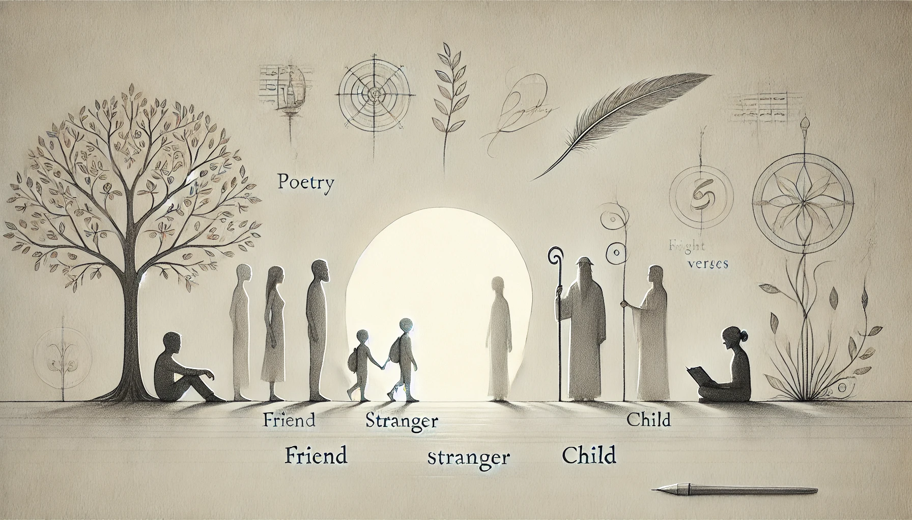

Journal 17: Everyone has something

I've come to realize that you can always learn something from someone. Anyone. Whether it's a friend, a stranger, a child, or someone I disagree with — everyone carries a lesson if I'm open enough to see it.
I used to think learning was mostly about gathering knowledge, reading books, or mastering a skill. But it's more than that. Life teaches through experiences, through people. I learn patience from someone slower than me. I learn empathy when I listen to someone's struggles. I learn humility when I'm wrong.
Being a perpetual learner is not just about feeding my mind; it's about growing as a person. It's learning emotionally, socially, even spiritually. Sometimes the biggest lessons come when I'm not actively looking for them.
So, the challenge now is: "What can I learn from this person?"
Stay curious. Stay open. Everyone has something to teach me.